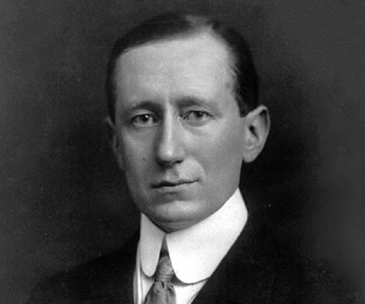
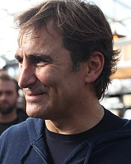

Guglielmo Marconi
Guglielmo Marconi was an Italian engineer and inventor who successfully demonstrated the working of
long-distance
wireless telegraph and radio signal. This Nobel-prize winner was born into a wealthy and educated family, and
was first educated in Bologna and Florence, later moving to a technical school in Leghorn.

Alex Zanardi
Alessandro "Alex" Zanardi is an Italian professional racing driver and paracyclist. He won the CART championship in 1997 and 1998, and
took 15 wins in the series. He also raced in Formula One from 1991 to 1994 and again in 1999; his best result
was a sixth-place finish in the 1993 Brazilian GP. He returned to CART in 2001, but a major crash in the 2001
American Memorial resulted in the amputation of his legs. He returned to racing less than two years after the
accident; competing in the European Touring Car Championship in 2003–2004 and then in the World Touring Car
Championship between 2005 and 2009, scoring four wins.
